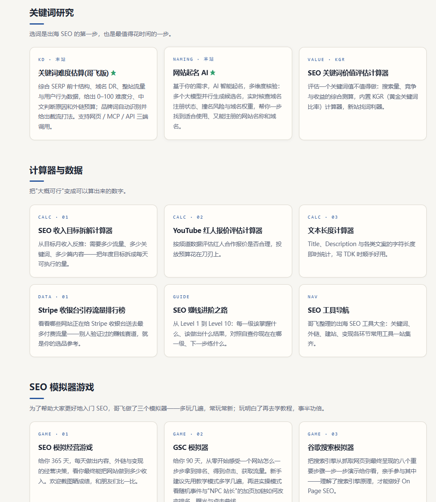
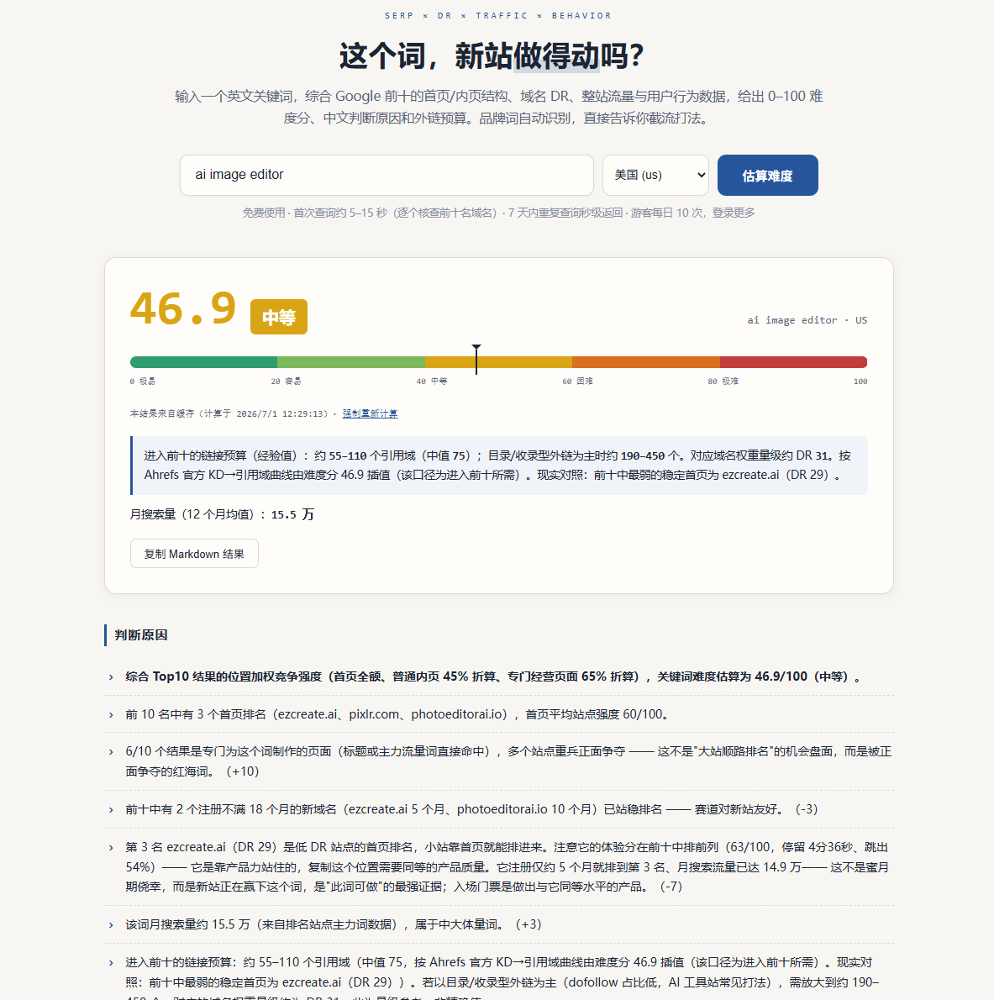
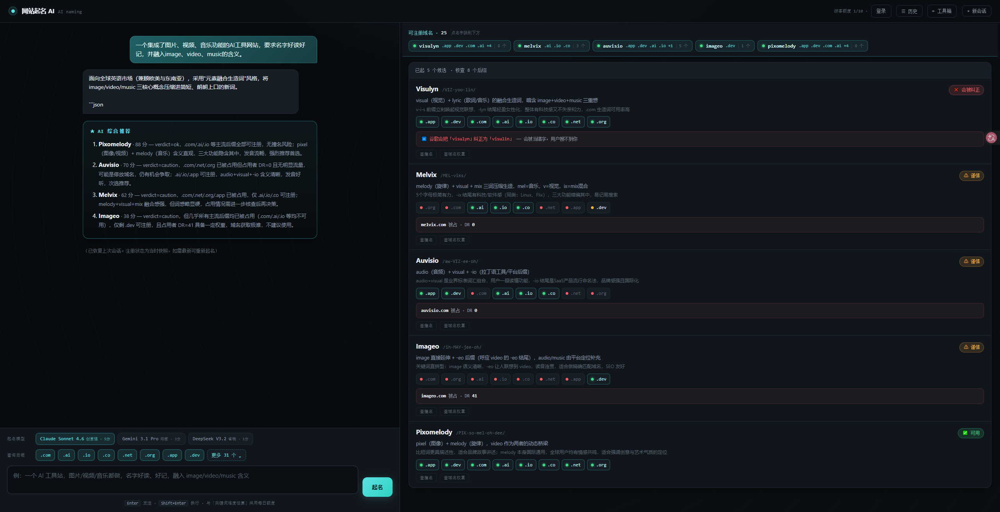
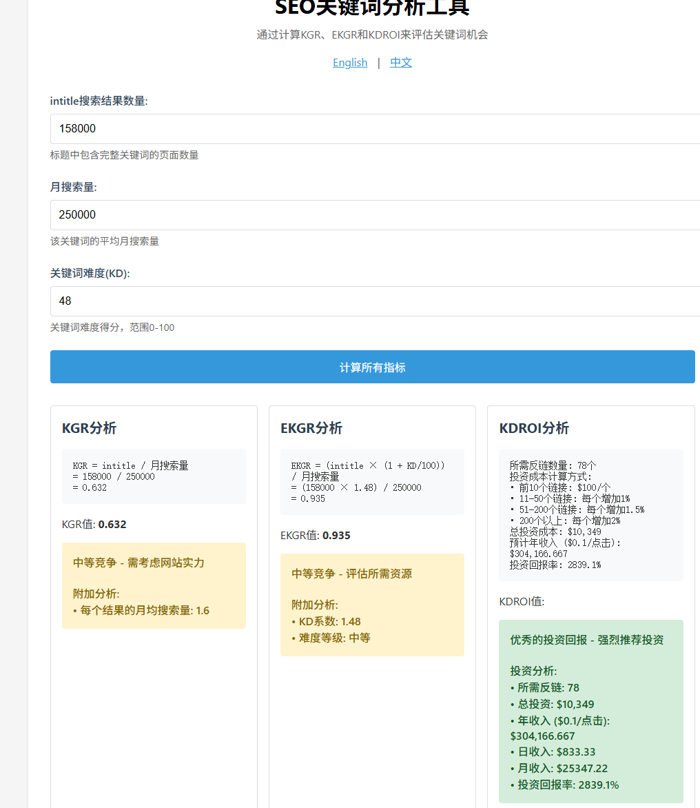
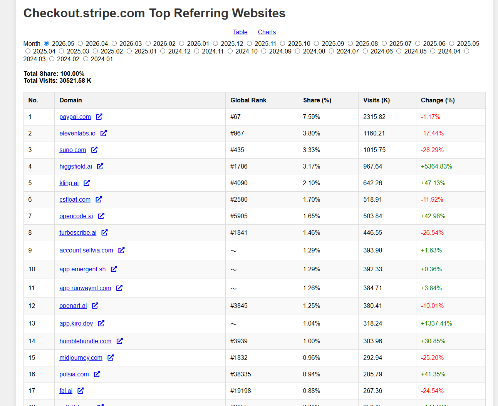
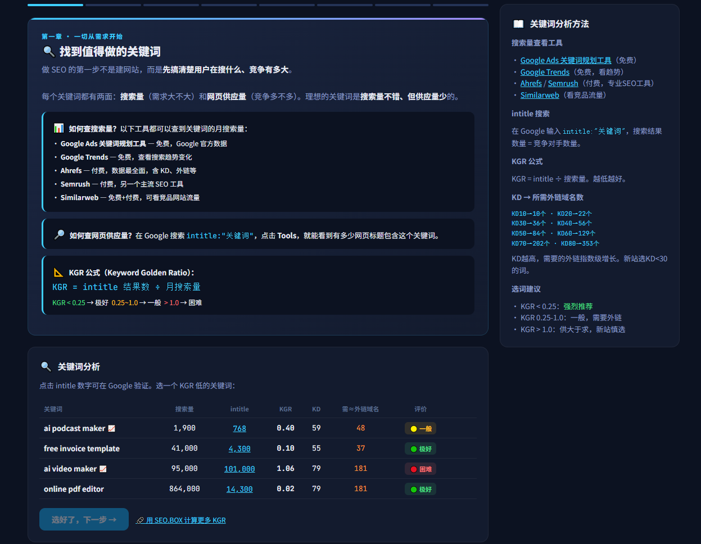

早上好，朋友们！ 今天去听哥飞老师的年中线下分享会了，今天就来分享下哥飞老师的SEO 工具箱，有部分功能暂时可以非社群用户免费使用的，这些工具都是网站开发神器，我也是会经常用。 地址：seo.web.cafe

关键词难度计算
这个现在已经是我找需求，判断词做不做的一个必备神器了，不只是KD，哥飞老师的工具综合了前10名网站的KD，流量，体验，年龄综合打分。评估更加的全面，更有参考性。

网站起名
不知道大家有没有这样的经历，和AI 讨论一大堆之后，找到一个心仪的域名，但是一购买发现已经被注册了，哥飞老师的这个工具除了综合AI建议外，还会真实的去去查询域名是否注册，节约时间。

关键词分析
这个就是用来计算我们之前说的KGR的，除了KGR 还可以看到EKGR 和 KDROI 的数据，通过这个指标帮你评估关键词的ROI

Stripe 引荐流量排行
这个就是我们之前说的Stripe 收入排行榜的数据，这里不用自己去similarweb 看入站流量，而是直接帮你总结好了，而且有历史的数据可以查看，通过这个榜单去寻找一些需求方向。

SEO 模拟经营
SEO 大家都知道很慢，所以我们实践学习SEO是一个很长的过程，很难进行理解。哥飞老师的这个SEO模拟经营，可以让体会到SEO 是怎么样的一个流程，了解到怎么布局关键词内容，购买外链。当然玩到最后大家还会体会到日入万刀的快感。非常nice~

我是赫兹，专注网站出海第408天，持续分享网站出海内容。